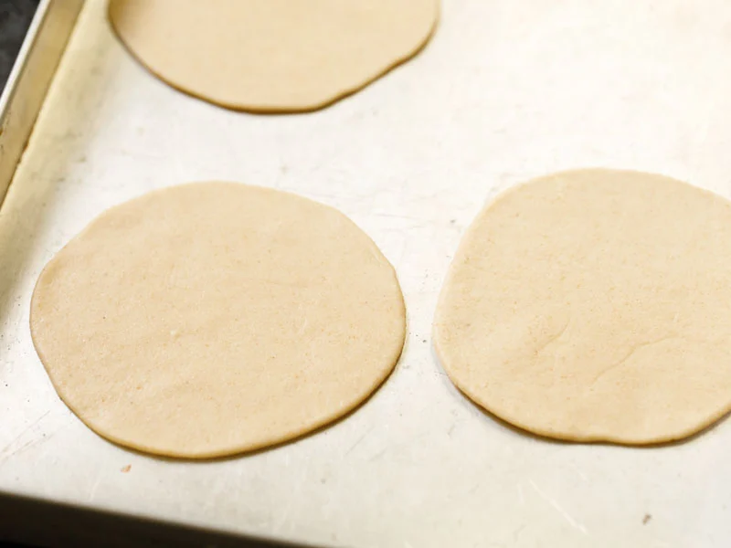

Poori Recipe {Puri}: Step-by-Step Perfection
Poori or Puri is a traditional Indian fried bread that is delicious to enjoy with almost any main dish. It’s a simple unleavened bread made from just whole wheat flour, salt, and water. Here I share my poori recipe with step-by-step photos and the best tips for making puri at home – crispy, fluffy, and soft and I bet you’ll love making homemade puri to enjoy with your favorite meals!

How to Make Poori
Homemade puri only takes about 40 minutes to make from start to finish. Be sure to read the entire poori recipe, including my tips for the best puri below before you get started!
Make The Dough
1. First, mix together 3 cups whole wheat flour (360 grams), 1 teaspoon salt, and 1 teaspoon oil (optional) in a large bowl. For more crispy puri, you can add ¼ cup fine rava (sooji or semolina).
2. Add just a bit of water at a time as you begin to form the dough, making sure to not oversaturate the mixture.
3. Knead the dough with a wooden spoon or your hands, or use a standing mixer. Again, add only a splash or two of water at a time as you work.
4. Continue to knead until you form a stiff, tight dough. It should not be soft like a roti or a bread loaf. You can add about ¾ to 1 cup of water in total.
Cover the bowl with a kitchen towel or plastic wrap, and let the dough rest for 20 to 30 minutes at room temperature.
Assemble, Roll & Shape
5. When ready to use, divide the dough into about 30 small or 25 medium pieces, and roll each into a tight ball.
6. Next, use the palm of your hand to lightly flatten the dough ball, and then apply a bit of oil to the entire surface.
This helps the bread fry evenly and rise properly, without the need to dust with flour first (which runs the risk of creating burnt flour particles in your oil).
7. Use a rolling pin to roll the poori dough evenly into circles that aren’t too thick or too thin. Ideally, you want them to be about ¼ inch thick.
8. Then place the rolled poori on a plate, and loosely cover with a clean kitchen towel so that they don’t dry out.
Deep Fry Poori
While it is easy to fry puri at home, it does take a gentle touch. Because they need to puff up you should be extra careful not to crack them, otherwise oil will seep into the dough as it cooks and get soggy.
Follow these simple steps for making sure you fry perfect puri every time:
9. First, heat oil in a deep pan (kadai). Test the oil by dropping a small dough ball into oil. If it rises quickly to the top, then the oil is hot enough for frying.
Once you have the oil to the right temperature, carefully add one puri at a time.
10. It should begin to puff up almost immediately after it hits the hot oil.
11. Give it a nudge with a slotted spoon or spider spoon to keep the puri moving and therefore cooking evenly.
12. Gently press and nudge the puri on the sides with a slotted spoon or spider spoon to help it puff up completely.
13. Continue to fry for just a minute or two, until the oil stops bubbling and the bottom of the puri is golden to your liking.
14. Next, turn over the poori and gently press down with the slotted spoon as it fries for a few more seconds. This will ensure that there’s a lovely brown color on all sides.
15. Then transfer the fried puri to a plate lined with paper towels to absorb any excess oil.
Fry the remaining poori this way, lowering or increasing the oil temperature as needed to maintain the right level of heat.
Very hot oil will darken the color or there may be uneven color patches on the puri.
Storage Suggestions
16. Serve poori hot with any number of sweet or savory dishes, as I have mentioned below. Or enjoy by themselves for a tasty snack!
To keep puri soft for a few hours, stack them in a steel container, sealing with a lid at room temperature. They will remain soft and won’t become dense and chewy.
Leftovers can be stored in closed container at room temperature for up to 1 day. Because they will lose their crispy exterior, I suggest to rewarm you either bake for just a few minutes in the oven.
Serving Suggestions
Poori is a common side in Indian cuisine and is typically served with a dry or curried potato dish. Crispy fried poori and this saucy, bright Potato Curry are a perfect combination!
Together they make a wonderfully comforting and delicious meal that happens to be vegetarian and vegan-friendly.
Not only do puri go well with savory dishes, they can be paired with sweet breakfasts and desserts. Sooji Halwa is a breakfast staple that is sweetened with sugar.
Recipes that pair well with Puri
Chana Masala – The classic North Indian curry made with white chickpeas, onions, tomatoes, and spices.
Veg Kurma – Also called korma, a saucy mixed vegetable dish with coconut, spices and herbs.
Aloo Chole – This very filling breakfast dish includes potatoes and chickpeas.
Poori Bhaji – Flavor packed potatoes with onions, spices, herbs and tastes best with poori.